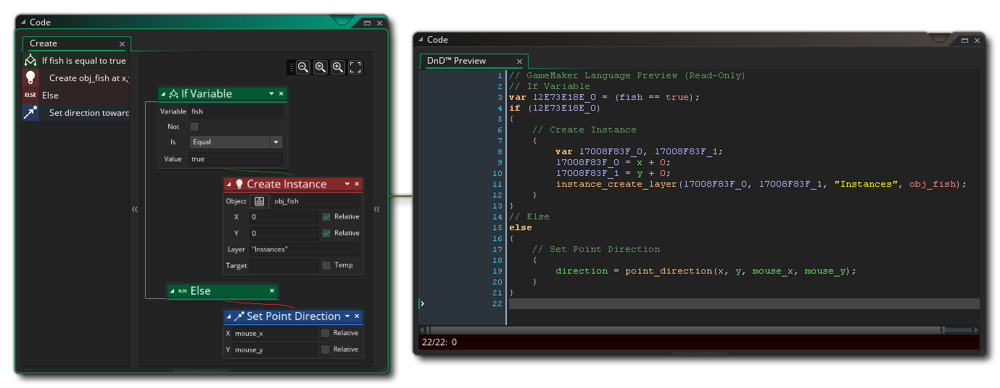
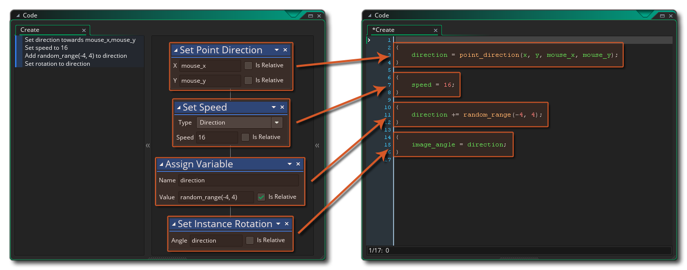

Ein weiteres Merkmal von DnD™ ist, dass Sie es in GML ( GameMaker Language) -Code konvertieren können und auf diese Weise sehen, was genau hinter den Kulissen passiert, wenn Sie Aktionen verwenden. Bevor Sie die Aktionen jedoch tatsächlich in GML ändern, können Sie sie zunächst mit der rechten Maustaste in der Vorschau anzeigen  Menüpunkt Live-Vorschau:
Menüpunkt Live-Vorschau: 
Welches öffnet ein neues Fenster: 
Wenn Sie DnD™ -Aktionen hinzufügen, ändern oder entfernen, wird die GML-Live-Vorschau aktualisiert, um Ihnen den tatsächlichen Code anzuzeigen, der "hinter den Kulissen" erstellt wird. Der Code in der Live-Vorschau kann nicht direkt bearbeitet werden, Sie können jedoch Abschnitte auswählen und zum Einfügen in GML-Skripts oder Code-Aktionen kopieren (z. B.).
Wenn Sie entscheiden, dass Sie das DnD™ nach dem Anzeigen der Vorschau in Code konvertieren möchten, können Sie dies erneut tun, indem Sie mit der rechten Maustaste klicken  in jedem Fall Arbeitsbereich mit Aktionen und Auswahl von In GML konvertieren.
in jedem Fall Arbeitsbereich mit Aktionen und Auswahl von In GML konvertieren. 
Wenn Sie dies zum ersten Mal tun, erhalten Sie eine Warnmeldung, dass dies eine einseitige Konvertierung ist, da Sie Aktionen in Code umwandeln können, aber Sie können sie später nicht wieder in einzelne Aktionen konvertieren. Wenn Sie hier auf "OK" klicken, wird die Konvertierung für Sie ausgeführt. 
Der resultierende Code verwendet {}, um einzelne Aktionen zu begrenzen, und Sie können deutlich sehen, welche Aktionen sich auf welche Funktionen oder Variablendeklarationen innerhalb des Codes beziehen. Wenn das DnD™ komplexer ist, wird es auch der Code sein, aber es gelten die gleichen allgemeinen Regeln und der Code wird sequentiell genau so aufgebaut, wie Sie das DnD™ geschrieben haben. Beachten Sie, dass dem Code manchmal zusätzliche lokale (temporäre) Variablen hinzugefügt werden, um bestimmte Werte zu speichern, die zum Beispiel verwendet werden: 
Wird dieser Code: 
Hier erstellt der Code zunächst eine lokale (temporäre) Variable und setzt sie auf false, dann prüft er, ob die Instanz existiert und setzt die lokale Variable auf die Rückgabe des Funktionsaufrufs. Die lokale Variable wird dann überprüft, um zu sehen, ob dies der Fall ist true oder false und wenn es wahr ist, wird der Rest des Codes ausgeführt.
Wenn Sie lernen, mit Drag & Drop zu programmieren, kann dies ein wichtiges Werkzeug für die spätere Verwendung von GML sein, aber es ist keineswegs obligatorisch, und Sie können immer noch großartige Spiele mit DnD™ erstellen! Es ist auch erwähnenswert, dass während der Umwandlungsprozess ein Weg ist, nach Aktionen Code konvertieren, können Sie mit DnD zurückgehen™ erneut mit der rechten Maustaste im Menü im Code - Editor und wählen Sie „DND™ Convert“. Dadurch wird der zuvor erstellte Code in eine Aktion " Code ausführen" eingefügt. Anschließend können Sie DnD™ wie zuvor verwenden: